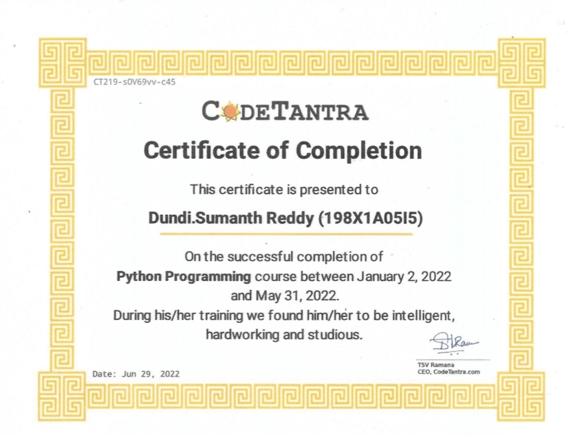
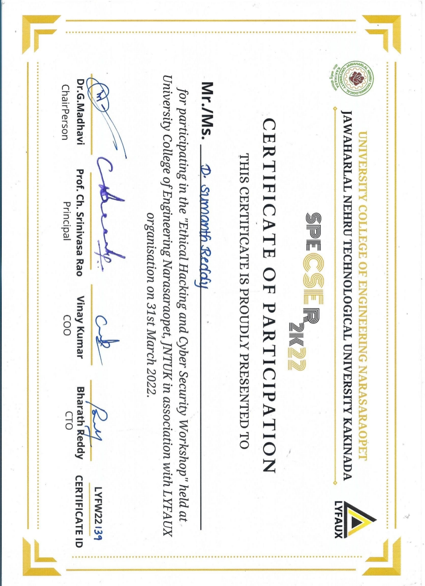
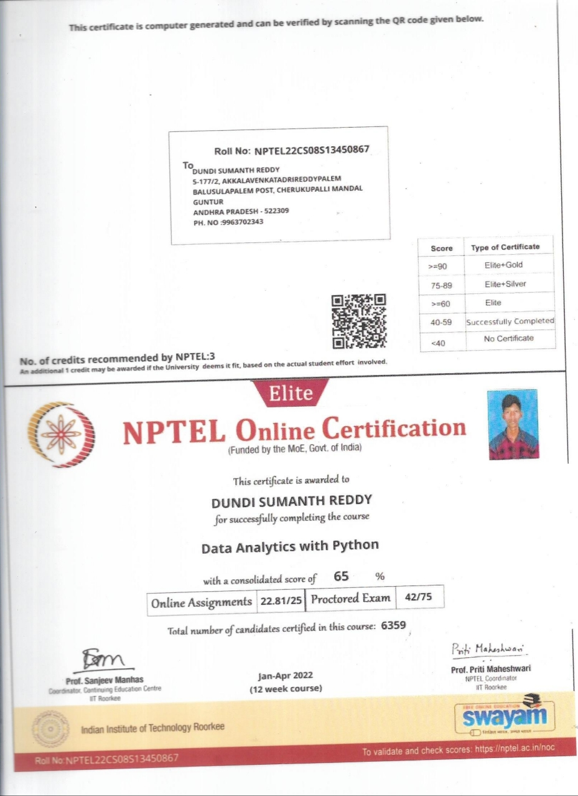
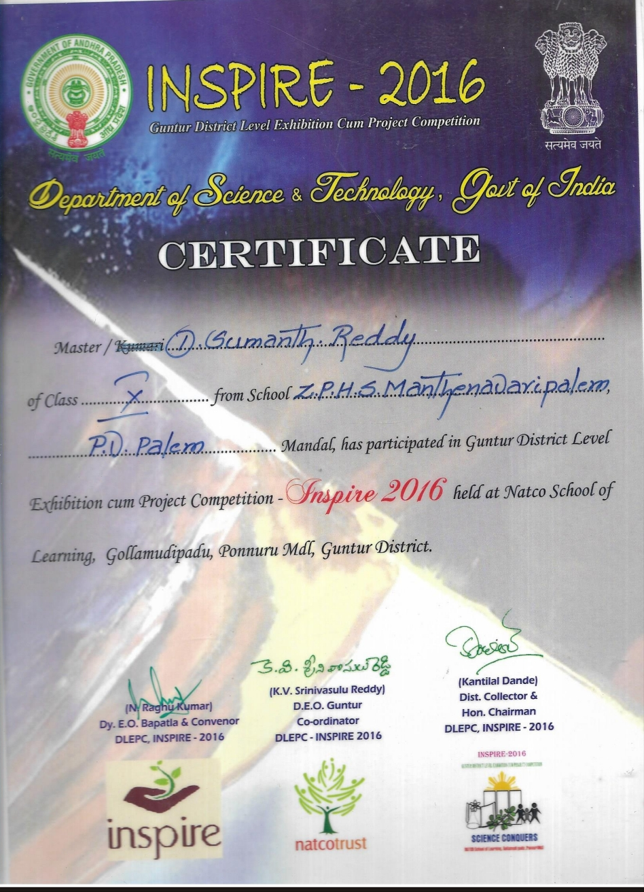
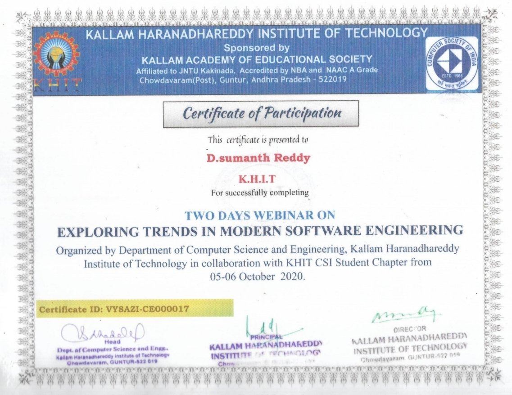

- Java Full Stack Web Development Course Completion Certificate - TAP ACADEMY
- Certificate Completion of TCS ION Career Edge-Young Professional - TCS
- Course Completion Certificate of Python Programming - CODETANTRA 
- Ethical Hacking and Cyber Security Workshop - JNTUK With Association With LYFAUX 
- Data Analytics with Python - NPTEL 
- Certificate Of Inspire-2016 Guntur District Level Exhibition Cum Project Competition 
- Certificate Of Two Days Webinar on Exploring Trends in Modern Software Engineering 

Successfully completed the TCS ION Career Edge-Young Professional program, gaining essential skills for the industry
Learned Python programming concepts, data structures, and algorithms through the CODETANTRA online course.
Participated in an intensive workshop on ethical hacking and cybersecurity, enhancing knowledge of digital security.
Completed the NPTEL course on Data Analytics with Python, gaining insights into data analysis techniques using Python.
Received recognition for participation and innovation in the Inspire-2016 Guntur District Level Exhibition.
Attended a webinar on the latest trends in modern software engineering, gaining insights into industry advancements.